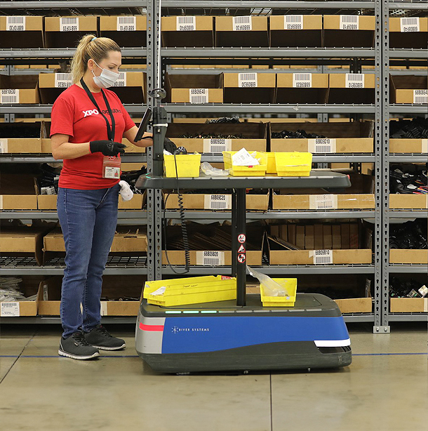

Project Discovery
UX & UI
Project Discovery
UX & UI
The client
XPO is a renowned LTL freight and logistics company with an extensive reach, boasting 13,000 drivers, 35,000+ tractors/trailers, and coverage of 99% of US ZIP codes. Handling over 200,000 shipments weekly, the company runs an impressive 620 million line-haul miles per year.
The project
Our team, consisting of two designers and a software engineer, embarked on a three week journey from Uruguay to Portland. Our mission? To delve into some XPO's warehouses to analyze and understand the challenges they face in stock control.
The Problem
One of the critical issues we encountered was the frequent occurrence of delayed or incorrect deliveries, primarily stemming from inaccurate stock control practices. The reliance on manual processes for stock control and labeling proved to be not only time-consuming but also prone to errors. Additionally, the lack of efficient communication channels among warehouse staff hindered their ability to access crucial information promptly, impacting their effectiveness. These challenges were costing XPO millions of dollars annually.
Design Approach
To address these challenges, our focus was on digitalizing the manual stock control and labeling processes. This involved creating a user-friendly digital tool that would streamline stock control, making it more accurate and efficient. Additionally, we aimed to improve communication between warehouses by integrating a communication module within the tool. This module would allow staff to communicate seamlessly, share information, and access necessary data in real-time, enhancing overall operational efficiency.
Our approach included conducting in-depth interviews and observations at various warehouses to understand the workflow and pain points of the staff. This information guided us in designing a solution that would not only address the current challenges but also be easily adaptable to future needs.
Conclusions
Throughout this experience, we gained invaluable insights and learnings that were shared with stakeholders to help them understand the importance of digitalization, the impact of communication on efficiency, how to approach it, the value of user-centric design, and the power of collaboration. This project marked the beginning of a long-standing relationship of trust with the company.
Warehouses
New tool
After three weeks of interviews, meetings, warehouse discoveries, research, and design, we iterated through several wireframes before finalizing designs based on the company's existing design system. This iterative process allowed us to incorporate feedback, refine our ideas, and ensure that the final designs aligned with the company's needs and branding guidelines.